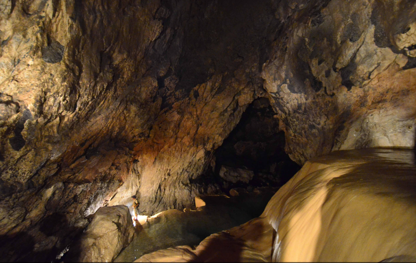
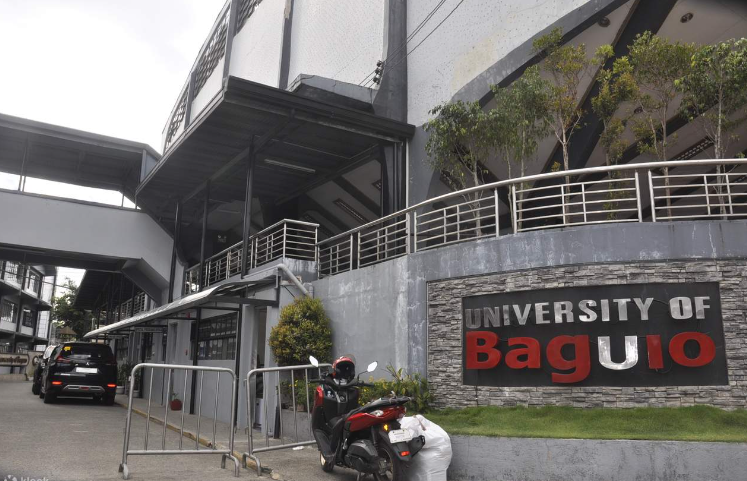

History
Benguet is a landlocked province in the Philippines located in the Cordillera Administrative Region in Luzon. It is known for its mountainous terrain, cool climate, and rich culture.
The province of Benguet was established in 1901 during the American colonial period. It was originally a part of the old Mountain Province until it became a separate province. Benguet played a significant role in the mining industry, particularly in gold and copper mining, which contributed to its economic development.
The mountainous area now covered by Benguet is generally presumed to have been settled from at least the 14th century by tribes coming from the surrounding lowlands, lured by the abundance of natural resources such as gold, hides, and wax. Two of these groups, the Ibaloi and the Kankanaey, are dominant ethnolinguistic groups of the area. In the pre-conquest period, these tribes enjoyed flourishing trade with lowland groups immediately to their west and south, such as the Pangasinans. Governor Juan "Oraa" Cariño (1913-1918), one of Benguet’s governors, was the first Filipino governor.
Geography
Benguet is situated in the southern part of the Cordillera Administrative Region. It is bounded by the provinces of Pangasinan and La Union on the south, Mountain Province on the east, Ifugao on the southeast, and Nueva Vizcaya and Nueva Ecija on the west.
The province is characterized by its mountainous terrain, with peaks reaching up to over 2,900 meters above sea level. It is home to several major mountain ranges, including the Cordillera Central and the Sierra Madre. Benguet's cool climate makes it suitable for agriculture, particularly the cultivation of highland crops such as strawberries, vegetables, and flowers.
Benguet covers an area of 2,769.08 square kilometres (1,069.15 sq mi) occupying the southwestern tip of the Cordillera Administrative Region. If Baguio is included for geographical purposes, the total area of Benguet is 2,826.59 square kilometres (1,091.35 sq mi).The province is bordered on the northeast by Mountain Province and Ifugao, on the southeast by Nueva Vizcaya, on the south by Pangasinan, on the west by La Union, and on the northwest by Ilocos Sur.
Demographics
The population of Benguet in the 2020 census was 460,683 people,[5] making it the most populous province in the region. It had a density of 170 inhabitants per square kilometre or 440 inhabitants per square mile. If the highly urbanized city of Baguio is included for geographical purposes, the population is 791,590, with a density of 280/km2 (725/sq mi).p>
In the May 2000 census, Benguet had a total population of 330,129. This figure is up by 16,296 from 313,833 persons recorded in the 1995 census, giving an annual growth rate of 1.09% during the 5-year period compared to the national average of 2.43%. The province registered 63,123 households, an increase of 4,588 households over the 1990 figure. This gave an average household size of 5.20 persons, slightly higher than the national average of 4.99.
The people of Benguet comprise three main ethnolinguistic groups. Kankanaeys dominate the northwestern municipalities, Ibalois are concentrated on the southeast, and Kalanguyas are mostly found in the east.[6][36][37] Migrants from lowland provinces have fused with the local populace to form a melting pot in some[vague] areas.
According to the 2000 Philippine census, Kankanaeys comprised 42.96% (141,434) of the entire provincial household population of 329,216 at the time, while 29.15% (95,968) were identified as Ibalois, and 3.69% (12,147) were Ikalahan/Kalanguya. Major resident lowland ethnic groups included Ilocanos at 13.36% (43,984) and Tagalogs at 2.36% (7,773). Ilokano population particularly doctors, teachers, businessmen and public servants arrived during the American period for the improvement of the health condition and for the education of the people. The pioneer Ilocanos helped establish La Trinidad as a commercial and political center.This resulted in an improved healthcare, education and economic life of the people' lives. It also established a closer ties between the Ilocanos and the Cordillerans.
Economy
Benguet's economy is primarily driven by agriculture, mining, and tourism. The province is known for its fertile soil and cool climate, which are conducive to the cultivation of highland crops such as strawberries, potatoes, and carrots. Agriculture remains a significant source of income for many residents, with numerous vegetable farms and fruit orchards scattered across the province.
In addition to agriculture, Benguet also has a long history of mining, particularly in gold and copper. Small-scale mining operations continue to operate in some parts of the province, providing employment opportunities for local communities.
Tourism is also a growing sector in Benguet, with visitors drawn to its scenic landscapes, cultural heritage, and outdoor recreational activities. Popular tourist destinations include the strawberry farms of La Trinidad, the historic Spanish trail of Mount Pulag, and the picturesque town of Sagada.
Tourism and Attractions
Benguet offers a wide range of tourist attractions and activities for visitors to enjoy. Some of the popular attractions include:
- Strawberry Farm in La Trinidad
- Mount Pulag National Park
- Sagada Caves 
- BenCab Museum
- Lake Danum
These attractions showcase the natural beauty, cultural heritage, and outdoor adventures that Benguet has to offer.
Schools and Universities
Benguet is home to several educational institutions that provide quality education to students in the region. Some of the prominent schools and universities include:
- University of Baguio 
- Benguet State University
- Philippine Military Academy
- Saint Louis University
- Cordillera Career Development College

These institutions offer a wide range of academic programs and facilities to cater to the educational needs of students in Benguet and neighboring provinces.